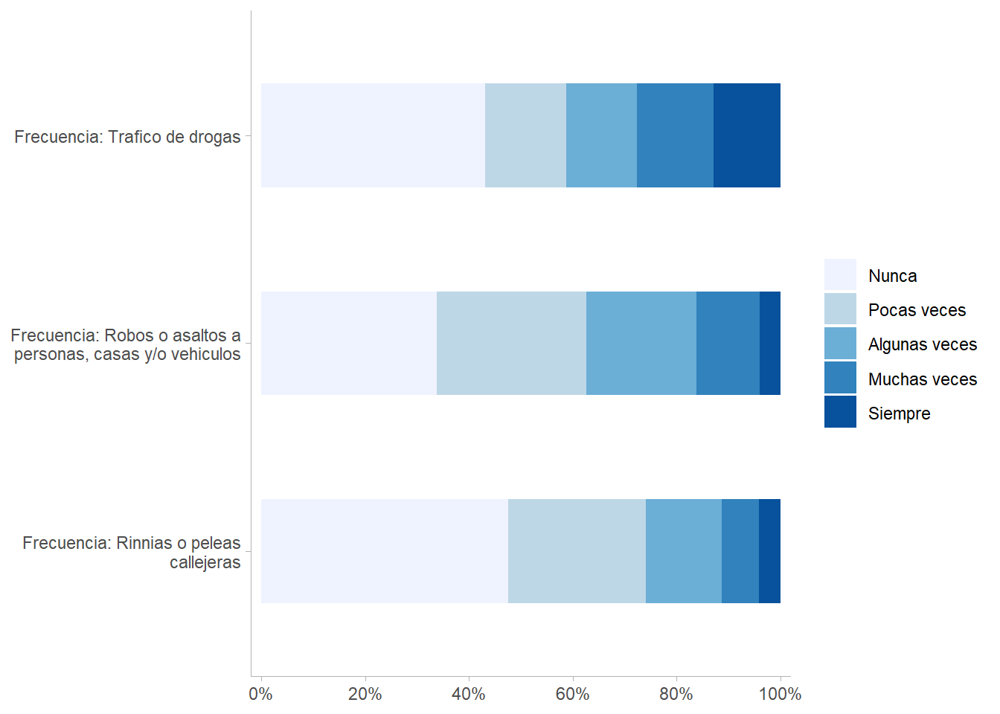
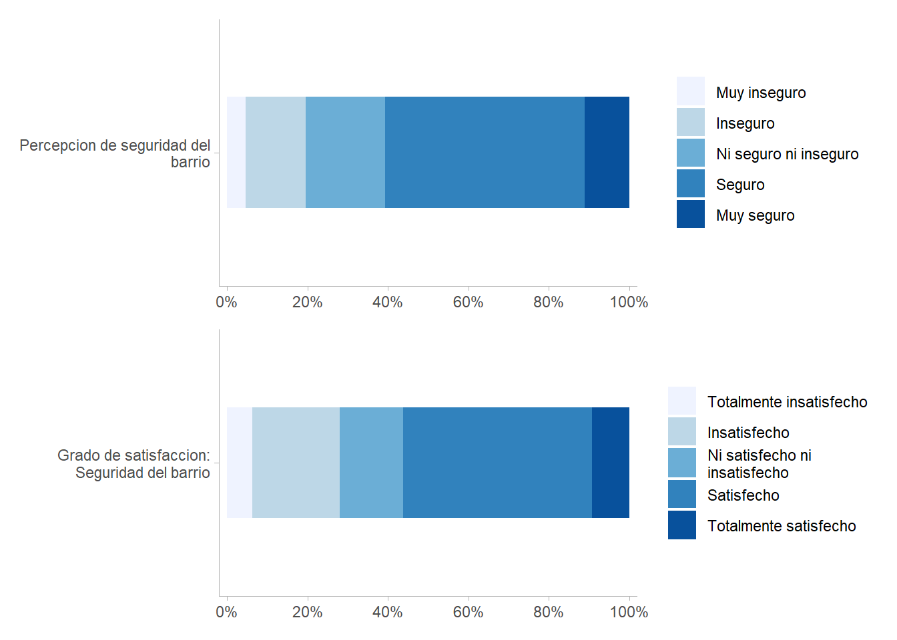

Warning: package 'pacman' was built under R version 4.4.22 Propuesta de Cohesión Horizontal
2.1 Antecedentes
El concepto de cohesión social horizontal se constituye a partir de una crítica a las definiciones previas, que solían confundir sus contenidos con condiciones externas como la pobreza, la igualdad de oportunidades o la tolerancia. Frente a ello, Chan et al., 2006 proponen una definición minimalista que identifique los elementos constitutivos de la cohesión sin diluir su valor analítico. En este marco, la cohesión horizontal se entiende como el conjunto de actitudes y comportamientos que regulan las relaciones entre individuos y grupos dentro de la sociedad, independientemente del Estado.
Conceptualmente, incluye la confianza generalizada entre ciudadanos, la disposición a cooperar y ayudar más allá de las fronteras grupales y el sentido compartido de pertenencia. Operacionalmente, estos componentes se expresan en indicadores subjetivos (confianza interpersonal, voluntad de cooperar, identificación con la comunidad) y objetivos (participación en asociaciones, voluntariado, donaciones, cooperación o divisiones entre grupos). Así, la cohesión horizontal adquiere una forma precisa y medible, lo que permite evaluar comparativamente el grado de integración social entre ciudadanos en distintos contextos.
Anteriormente, desde el Observatorio de Cohesión Social (OCS-COES) ya se ha incursionado en la representación empírica de la cohesión social horizontal. Específicamente desde una perspectiva comparada regional a partir de encuestas internacionales como LAPOP y WVS. En este marco, la cohesión parte de su comprensión como un entramado de vínculos entre ciudadanos y grupos sociales, expresada en actitudes subjetivas y prácticas objetivas de interacción. A nivel conceptual, esta dimensión se ha estructurado en tres subdimensiones principales: sentido de pertenencia, calidad de vida en el vecindario y redes sociales.
Otro antecedente importante, para la medición de cohesión socia en Chile, es la propuesta de Castillo et al. (2021), quienes operacionalizan la cohesión social horizontal distinguiendo entre indicadores subjetivos —actitudes de pertenencia, confianza y aceptación de la diversidad— e indicadores objetivos, vinculados a la participación social y las prácticas prosociales. Lo anterior lo hacen a través de la encuesta ELSOC,con la que se identifican ítems que capturan el sentido de pertenencia (identificación y orgullo nacional), la confianza social (interpersonal y hacia los vecinos), la cohesión barrial (integración e identificación con el vecindario) y las conductas prosociales (voluntariado, donaciones y apoyo a terceros), además de actitudes hacia grupos minoritarios y migrantes como expresión de inclusión social.

En primer lugar, la seguridad pública constituye un eje central de la cohesión horizontal, pues aborda tanto las condiciones objetivas como las percepciones de resguardo en el entorno inmediato. Dentro de la seguridad objetiva se incluyen indicadores como la victimización por delitos, que permite observar la exposición directa a situaciones de riesgo. En paralelo, la seguridad subjetiva se captura a través de la percepción de seguridad en el barrio, indicador que refleja la manera en que los ciudadanos evalúan su entorno más próximo. En conjunto, estos elementos permiten articular la dimensión objetiva de la seguridad con la vivencia subjetiva de sentirse protegido o vulnerable.
En segundo lugar, la confianza interpersonal aparece como un componente clave de la cohesión social horizontal, al recoger tanto disposiciones actitudinales como vínculos comunitarios. Por un lado, se considera la confianza general en los vecinos, entendida como la disposición a asumir que los otros actuarán de manera cooperativa y predecible. Por otro, se incorpora la confianza interpersonal generalizada, que indaga en la creencia de que la mayoría de las personas son dignas de confianza. Ambos indicadores se complementan al situar la confianza tanto en el nivel inmediato de las relaciones barriales como en un plano más amplio de interacción social.
De esta manera, el esquema de medición para América Latina integra dimensiones de seguridad y confianza desde un enfoque minimalista para capturar la cohesión horizontal.
2.1.1 Cohesión Social Horizontal en Chile

Para el caso chileno, la encuesta ELSOC, como bien ya han mostrado Castillo et al. (2021), permite operacionalizar la dimensión horizontal de la cohesión social a partir de la distinción tanto de indicadores subjetivos —como el sentido de pertenencia, la confianza y la apertura a la diversidad— como indicadores objetivos —como la participación social y las prácticas prosociales—. Estos se organizan en cuatro grandes subdimensiones: sentido de pertenencia, confianza social, cohesión barrial y sociabilidad local, y participación y prosocialidad.
La primera, sentido de pertenencia, se capta a través de ítems del módulo de Sociabilidad Política que indagan sobre el grado de identificación con Chile y el orgullo nacional. Estas preguntas reflejan el vínculo simbólico y afectivo de las personas con la comunidad política nacional y permiten observar hasta qué punto los individuos se reconocen como parte de un colectivo común.
La segunda, confianza social, incluye indicadores tanto de confianza interpersonal generalizada como de confianza en los vecinos. Preguntas como “¿Se puede confiar en la mayoría de las personas o hay que tener cuidado?” o “¿Cuánto confía en sus vecinos?” miden las expectativas que los individuos tienen respecto al comportamiento de los otros, constituyendo un elemento central de la cohesión horizontal según Chan et al., en tanto facilita la cooperación entre desconocidos.
La tercera, cohesión barrial y sociabilidad local, se refiere a la integración y calidad de las relaciones en el espacio cotidiano del vecindario. ELSOC incluye ítems sobre la percepción de integración al barrio, la identificación con sus habitantes y el nivel de colaboración entre vecinos. Estos indicadores permiten analizar la cohesión en un nivel micro, donde la interacción directa fortalece o debilita los lazos comunitarios.
Finalmente, la subdimensión de participación social y prosocialidad incorpora conductas concretas que muestran la disposición de las personas a involucrarse en la vida social y apoyar a otros. ELSOC mide este aspecto a través de la participación en voluntariado, las donaciones a causas sociales, el apoyo económico o material a otras personas, y el acompañamiento en situaciones de dificultad. Estas acciones representan la expresión objetiva de la cohesión horizontal, pues reflejan la voluntad de contribuir activamente al bienestar colectivo.
Un componente adicional lo constituye la aceptación de la diversidad, expresada en actitudes hacia grupos sociales distintos, como migrantes o minorías sexuales. Estos indicadores permiten observar hasta qué punto la cohesión se sustenta no solo en la homogeneidad, sino también en la inclusión de la diferencia y el reconocimiento mutuo, aspecto clave en el marco de sociedades crecientemente diversas.
Ahora bien, las propuestas presentadas tienen diferencias importantes.
- En primer lugar, con ELSOC es mucho más compleja en tanto tiene mayores niveles de granularidad y, consecuentemente, mayor cantidad de factores en comparación con la propuesta de que se construye para Latinoamérica con LAPOP, cuya perspectiva es más minimalista.
Esto se expresa en, por ejemplo, la subdimensión de confianza en instituciones y democracia. En la propuesta con ELSOC esta se entiende como una subdimensión compuesta de dos factores: confianza en instituciones y satisfacción con la democracia. No así, en la propuesta construida con LAPOP estos factores se entienden como dos subdimensiones independientes.
Por su parte, en la propuesta con ELSOC se consideran varias subdimensiones que no están presentes en el índice de Latinoamérica debido a decisiones basadas en inconsistencia teórica y/o estadística, tal como el factor de comportamiento prosocial, el cual intentó integrarse en con datos de WVS y, si bien la consistencia interna del factor era aceptable, no correlacionaba con los demás factores de su dimensión.
Finalmente, hay que decir que las propuestas no comparten ningún factor de sus subdimensiones. Si bien ambas integran el índice confianza interpersonal en su medición, ELSOC la considera como un factor de segundo orden, mientras que en la propuesta de LAPOP es un factor de primer orden.
2.2 Propuesta de Medición con ELSOC
| Subdimensión | Factor | Indicador | Encabezado | Categorías de respuesta | Código | Ola 2016 | Ola 2017 | Ola 2018 | Ola 2019 | Ola 2021 | Ola 2022 |
|---|---|---|---|---|---|---|---|---|---|---|---|
| Seguridad | Seguridad objetiva | Frecuencia de peleas callejeras | Durante los últimos 12 meses, ¿con qué frecuencia se han producido las siguientes situaciones en su barrio? | Nunca Pocas veces Algunas veces Muchas veces Siempre |
t_09_01 | Si | Si | Si | Si | Si | Si |
| Seguridad | Seguridad objetiva | Frecuencia de robos y/o asaltos | Durante los últimos 12 meses, ¿con qué frecuencia se han producido las siguientes situaciones en su barrio? | Nunca Pocas veces Algunas veces Muchas veces Siempre |
t_09_02 | Si | Si | Si | Si | Si | Si |
| Seguridad | Seguridad subjetiva | Frecuencia de tráfico de drogas | Durante los últimos 12 meses, ¿con qué frecuencia se han producido las siguientes situaciones en su barrio? | Nunca Pocas veces Algunas veces Muchas veces Siempre |
t_09_03 | Si | Si | Si | Si | Si | Si |
| Seguridad | Seguridad subjetiva | Satisfacción de seguridad | Utilizando la siguiente escala, ¿cuán satisfecho o insatisfecho está usted con el BARRIO dónde reside en cuanto a…? | Totalmente insatisfecho Insatisfecho Ni satisfecho ni insatisfecho Satisfecho Totalmente satisfecho |
t_06_01 | Si | Si | Si | Si | No | Si |
| Seguridad | Seguridad subjetiva | Percepción de seguridad | ¿Qué tan seguro o inseguro se siente en el barrio o vecindario donde usted vive? | Muy inseguro Inseguro Ni seguro ni inseguro Seguro Muy seguro |
t_10 | Si | Si | Si | Si | Si | Si |
| Vínculos territoriales | Pertenencia al barrio | Grado de acuerdo: Barrio ideal para mi | A continuación voy a leer algunas afirmaciones acerca de su barrio ¿Qué tan de acuerdo o en desacuerdo está usted con las siguientes afirmaciones? | Totalmente en desacuerdo En desacuerdo Ni de acuerdo ni en desacuerdo De acuerdo Totalmente de acuerdo |
t02_01 | Si | Si | Si | Si | No | Si |
| Vínculos territoriales | Pertenencia al barrio | Grado de acuerdo: Me siento integrado en este barrio | A continuación voy a leer algunas afirmaciones acerca de su barrio ¿Qué tan de acuerdo o en desacuerdo está usted con las siguientes afirmaciones? | Totalmente en desacuerdo En desacuerdo Ni de acuerdo ni en desacuerdo De acuerdo Totalmente de acuerdo |
t02_02 | Si | Si | Si | Si | No | Si |
| Vínculos territoriales | Pertenencia al barrio | Grado de acuerdo: Me identifico con la gente de este barrio | A continuación voy a leer algunas afirmaciones acerca de su barrio ¿Qué tan de acuerdo o en desacuerdo está usted con las siguientes afirmaciones? | Totalmente en desacuerdo En desacuerdo Ni de acuerdo ni en desacuerdo De acuerdo Totalmente de acuerdo |
t02_03 | Si | Si | Si | Si | No | Si |
| Vínculos territoriales | Pertenencia al barrio | Grado de acuerdo: Este barrio es parte de mi | A continuación voy a leer algunas afirmaciones acerca de su barrio ¿Qué tan de acuerdo o en desacuerdo está usted con las siguientes afirmaciones? | Totalmente en desacuerdo En desacuerdo Ni de acuerdo ni en desacuerdo De acuerdo Totalmente de acuerdo |
t02_04 | Si | Si | Si | Si | No | Si |
| Vínculos territoriales | Satisfacción con el barrio | Grado de acuerdo: En este barrio es facil hacer amigos | Respecto de las relaciones sociales que se establecen entre los vecinos de este barrio, ¿cuán de acuerdo o en desacuerdo está usted con las siguientes afirmaciones? | Totalmente en desacuerdo En desacuerdo Ni de acuerdo ni en desacuerdo De acuerdo Totalmente de acuerdo |
t03_01 | Si | Si | Si | Si | No | Si |
| Vínculos territoriales | Satisfacción con el barrio | Grado de acuerdo: La gente en este barrio es sociable | Respecto de las relaciones sociales que se establecen entre los vecinos de este barrio, ¿cuán de acuerdo o en desacuerdo está usted con las siguientes afirmaciones? | Totalmente en desacuerdo En desacuerdo Ni de acuerdo ni en desacuerdo De acuerdo Totalmente de acuerdo |
t03_02 | Si | Si | Si | Si | No | Si |
| Vínculos territoriales | Satisfacción con el barrio | Grado de acuerdo: La gente en este barrio es cordial | Respecto de las relaciones sociales que se establecen entre los vecinos de este barrio, ¿cuán de acuerdo o en desacuerdo está usted con las siguientes afirmaciones? | Totalmente en desacuerdo En desacuerdo Ni de acuerdo ni en desacuerdo De acuerdo Totalmente de acuerdo |
t03_03 | Si | Si | Si | Si | No | Si |
| Vínculos territoriales | Satisfacción con el barrio | Grado de acuerdo: La gente en este barrio es colaboradora | Respecto de las relaciones sociales que se establecen entre los vecinos de este barrio, ¿cuán de acuerdo o en desacuerdo está usted con las siguientes afirmaciones? | Totalmente en desacuerdo En desacuerdo Ni de acuerdo ni en desacuerdo De acuerdo Totalmente de acuerdo |
t03_04 | Si | Si | Si | Si | No | Si |
| Redes sociales | Confianza interpersonal | Confianza social generalizada | Hablando en general, ¿diría usted que se puede confiar en la mayoría de las personas, o que hay que tener cuidado al tratar con ellas? | Casi siempre se puede confiar en las personas Casi siempre hay que tener cuidado al tratar con las personas Depende (no leer) |
c02 | Si | Si | Si | Si | Si | Si |
| Redes sociales | Confianza interpersonal | Altruismo social generalizado | ¿Diría usted que las personas, la mayoría de las veces, tratan de ayudar a los demás, o se preocupan mayormente sólo de Si mismas? | La mayoria de las veces tratan de ayudar a los demas La mayoria de las veces se preocupan solo de si mismas Depende (no leer) |
c03 | Si | Si | Si | Si | Si | Si |
| Redes sociales | Comportamiento prosocial | Frecuencia de asistencias a reunión de temas públicos y/o comunitarios | Ahora le haré algunas preguntas sobre cosas que usted puede no haber hecho, haber hecho una vez o haber hecho dos o más veces durante los últimos 12 meses. No importa si no lo ha hecho. Por favor dígame, aunque sea de manera aproximada, cuántas veces… | Nunca lo hizo Lo hizo una o dos veces Lo hizo mas de dos veces |
c07_02 | Si | Si | Si | Si | Si | No |
| Redes sociales | Comportamiento prosocial | Frecuencia de hacer voluntariado | Ahora le haré algunas preguntas sobre cosas que usted puede no haber hecho, haber hecho una vez o haber hecho dos o más veces durante los últimos 12 meses. No importa si no lo ha hecho. Por favor dígame, aunque sea de manera aproximada, cuántas veces… | Nunca lo hizo Lo hizo una o dos veces Lo hizo mas de dos veces |
c07_04 | Si | Si | Si | Si | Si | No |
| Redes sociales | Ayuda económica | Frecuencia en prestar $10.000 o más | Ahora le haré algunas preguntas sobre cosas que usted puede no haber hecho, haber hecho una vez o haber hecho dos o más veces durante los últimos 12 meses. No importa si no lo ha hecho. Por favor dígame, aunque sea de manera aproximada, cuántas veces… | Nunca lo hizo Lo hizo una o dos veces Lo hizo mas de dos veces |
c07_06 | Si | Si | Si | Si | Si | No |
| Redes sociales | Ayuda económica | Frecuencia en ayudar a encontrar trabajo a alguien | Ahora le haré algunas preguntas sobre cosas que usted puede no haber hecho, haber hecho una vez o haber hecho dos o más veces durante los últimos 12 meses. No importa si no lo ha hecho. Por favor dígame, aunque sea de manera aproximada, cuántas veces… | Nunca lo hizo Lo hizo una o dos veces Lo hizo mas de dos veces |
c07_08 | Si | Si | Si | Si | Si | No |
La propuesta del OCS para medir la cohesión social horizontal a través de la ELSOC se organiza en tres dimensiones principales: seguridad, vínculos territoriales y redes sociales. Cada una integra factores e indicadores específicos que permiten observar tanto las condiciones objetivas como las percepciones y prácticas asociadas a la vida comunitaria.
La seguridad se mide desde un plano objetivo y subjetivo. En el primer caso, se consideran la frecuencia de peleas callejeras y la frecuencia de robos y/o asaltos en el barrio durante los últimos doce meses, indicadores que muestran la exposición a situaciones de riesgo. En el plano subjetivo, se incluyen la frecuencia de tráfico de drogas en el vecindario, la satisfacción con la seguridad del barrio y la percepción individual de sentirse seguro o inseguro en su entorno, lo que aporta una mirada sobre cómo los residentes evalúan y experimentan estas condiciones.
Los vínculos territoriales buscan capturar el grado de identificación y valoración del espacio de residencia. Esta dimensión se divide en dos factores. El primero, la pertenencia al barrio, incluye cuatro indicadores: considerar que el barrio es ideal, sentirse integrado, identificarse con los vecinos y percibirlo como parte de la propia identidad. El segundo, la satisfacción con el barrio, se mide a través de la facilidad para hacer amigos, la sociabilidad, la cordialidad y la colaboración de los vecinos, reflejando así la calidad de las relaciones comunitarias.
La tercera dimensión corresponde a las redes sociales, que permiten observar las dinámicas de confianza, solidaridad y cooperación entre personas. Se estructura en tres factores. La confianza interpersonal considera la disposición a confiar en los demás y la percepción de que las personas tienden a ayudar a otros o a centrarse en sí mismas. El comportamiento prosocial se mide mediante la participación en reuniones comunitarias y la realización de voluntariado en los últimos doce meses. Finalmente, la ayuda económica se evalúa a través de la disposición a prestar dinero y a colaborar en la búsqueda de empleo para alguien más.
Este esquema integra distintos planos de análisis —condiciones objetivas, percepciones subjetivas, identidades territoriales y prácticas sociales— para ofrecer una mirada amplia de la cohesión horizontal.
2.3 Análisis
2.3.1 Descriptivos
Seguridad Pública


Vínculos Territoriales

Redes Sociales

Correlaciones


- Análisis Factorial Exploratorio y CFA
- Construcción de índices y sus descriptivos (Media, desviación estándar, distribución y consistencia con los ítems usados)